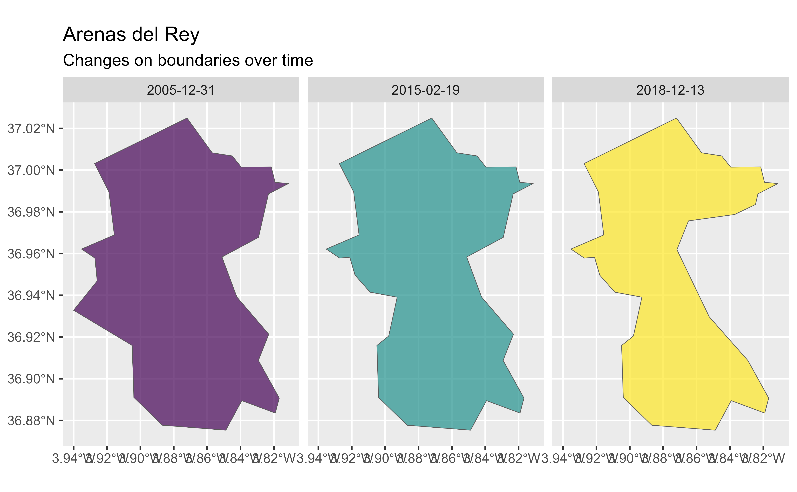

This dataset shows boundaries of municipalities in Spain.
Source
CartoBase ANE provided by Instituto Geografico Nacional (IGN), http://www.ign.es/web/ign/portal. Years available are 2005 up to today.
Copyright: https://centrodedescargas.cnig.es/CentroDescargas/cartobase-ane
It's necessary to always acknowledge authorship using the following formulas:
When the original digital product is not modified or altered, it can be expressed in one of the following ways:
CartoBase ANE 2006-2024 CC-BY 4.0 ign.es
CartoBase ANE 2006-2024 CC-BY 4.0 Instituto Geográfico Nacional
When a new product is generated:
Obra derivada de CartoBase ANE 2006-2024 CC-BY 4.0 ign.es
Data distributed via a custom CDN, see https://github.com/rOpenSpain/mapSpain/tree/sianedata.
Arguments
- year
character string or number. Release year, it must presents formats
YYYY(assuming end of year) orYYYY-MM-DD. Historical information starts as of 2005.- epsg
character string or number. Projection of the map: 4-digit EPSG code. One of:
"4258": ETRS89"4326": WGS84."3035": ETRS89 / ETRS-LAEA."3857": Pseudo-Mercator.
- cache
logical. Whether to do caching. Default is
TRUE. See Caching strategies section inesp_set_cache_dir().- update_cache
logical. Should the cached file be refreshed?. Default is
FALSE. When set toTRUEit would force a new download.- cache_dir
character string. A path to a cache directory. See Caching strategies section in
esp_set_cache_dir().- verbose
logical. If
TRUEdisplays informational messages.- resolution
character string or number. Resolution of the geospatial data. One of:
"10": 1:10 million.
"6.5": 1:6.5 million.
"3": 1:3 million.
- region
Optional. A vector of region names, NUTS or ISO codes (see
esp_dict_region_code()).- munic
character string. A name or
regexexpression with the names of the required municipalities.NULLwould return all municipalities.- moveCAN
A logical
TRUE/FALSEor a vector of coordinatesc(lat, lon). It places the Canary Islands close to Spain's mainland. Initial position can be adjusted using the vector of coordinates. See Displacing the Canary Islands inesp_move_can().- rawcols
logical. Setting this to
TRUEwould add the raw columns of the resulting object as provided by IGN.
Value
A sf object.
Details
When using region you can use and mix names and NUTS codes (levels 1, 2 or
3), ISO codes (corresponding to level 2 or 3) or "cpro"
(see esp_codelist).
When calling a higher level (province, CCAA or NUTS1), all the municipalities of that level would be added.
See also
Other political:
esp_codelist,
esp_get_can_box(),
esp_get_capimun(),
esp_get_ccaa(),
esp_get_ccaa_siane(),
esp_get_comarca(),
esp_get_countries_siane(),
esp_get_country(),
esp_get_gridmap,
esp_get_munic(),
esp_get_nuts(),
esp_get_prov(),
esp_get_prov_siane(),
esp_get_simpl,
esp_siane_bulk_download()
Other siane:
esp_get_capimun(),
esp_get_ccaa_siane(),
esp_get_countries_siane(),
esp_get_hydrobasin(),
esp_get_hypsobath(),
esp_get_landwater,
esp_get_prov_siane(),
esp_get_railway(),
esp_get_roads(),
esp_siane_bulk_download()
Other municipalities:
esp_get_capimun(),
esp_get_munic()
Examples
# \donttest{
# Municipalities that have changed in the past: three cuts
munis2005 <- esp_get_munic_siane(year = 2005, rawcols = TRUE)
munis2015 <- esp_get_munic_siane(year = 2015, rawcols = TRUE)
munis2024 <- esp_get_munic_siane(year = 2024, rawcols = TRUE)
# manipulate
library(dplyr)
#>
#> Attaching package: 'dplyr'
#> The following objects are masked from 'package:stats':
#>
#> filter, lag
#> The following objects are masked from 'package:base':
#>
#> intersect, setdiff, setequal, union
allmunis_unique <- bind_rows(munis2005, munis2015, munis2024) |>
distinct()
id_all <- allmunis_unique |>
sf::st_drop_geometry() |>
group_by(id_ine, name) |>
count() |>
ungroup() |>
arrange(desc(n)) |>
slice_head(n = 1) |>
glimpse()
#> Rows: 1
#> Columns: 3
#> $ id_ine <chr> "18020"
#> $ name <chr> "Arenas del Rey"
#> $ n <int> 3
library(ggplot2)
allmunis_unique |>
filter(id_ine == id_all$id_ine) |>
ggplot() +
geom_sf(aes(fill = as.factor(fecha_alta)),
alpha = 0.7,
show.legend = FALSE
) +
scale_fill_viridis_d() +
facet_wrap(~fecha_alta) +
labs(
title = id_all$name,
subtitle = "Changes on boundaries over time",
fill = ""
)

# }